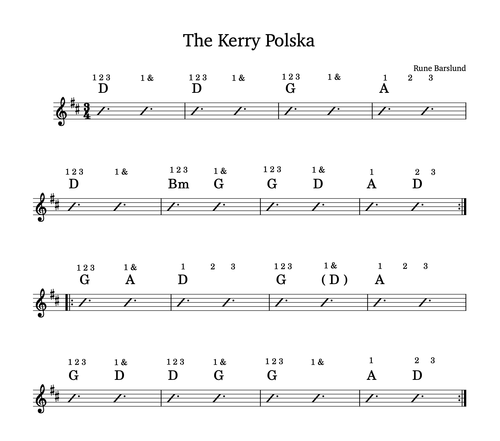

The first thing to note if you're trying to play along with the music file is that everything is a half-step lower than I've included here. Anyway, there are two main ways that I'd recommend counting this piece for accompaniment. The easiest would be to just play in 3/4 with an emphasis on the downbeats. The second is to treat it as 9/8 and follow the indications shown above the chords on the chart. In this case, the bulk of the measures can be counted as 12 12 12 123 with the occasional measure counted as 123 123 123. Each measure is unique, so you really have to either follow closely or really know the shape of the tune. I also recommend playing along with a metronome (somewhere around 105 bpm will do) to get things solid. Anyway, see if you can make any sense of it all and good luck!
